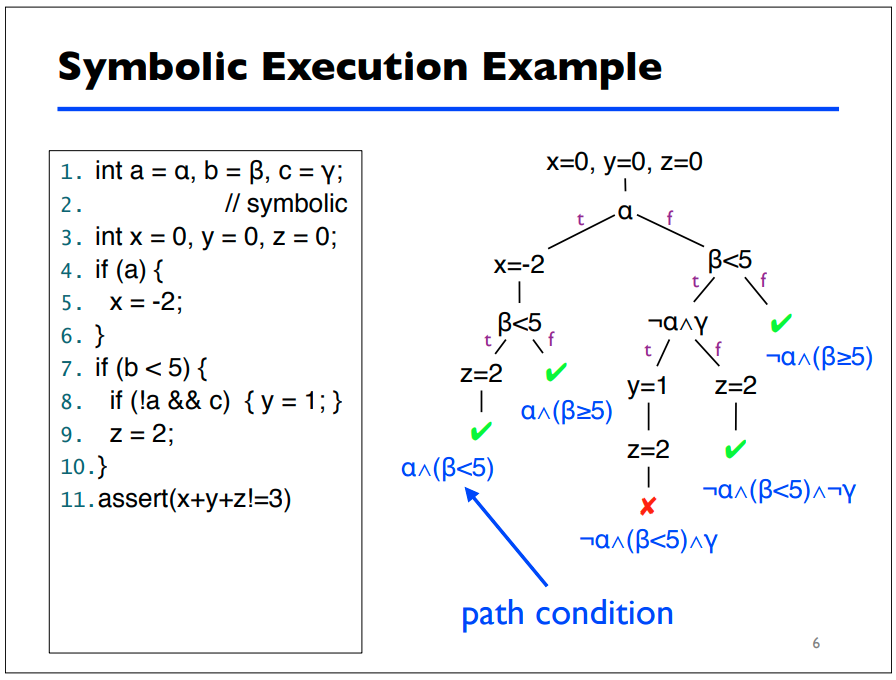

Symbolic execution
Symbolic execution is a program analysis technique that can be used to determine what concrete values are required to cause different parts of a program to execute. It's goals are similar to code-coverage based fuzzing, however, it's different because it's not generating and mutating a bunch of concrete input and throwing it at the program until it reaches a new execution path or branch.
Symbolic execution analyzes a program and assigns symbolic values to all expressions that cause conditional branches within a program. A symbolic execution engine maintains and generates path conditions using these symbols and expressions, providing the researcher with a symbolic representation of how to reach different execution paths within the program.
Symbolic execution engines also utilize model checkers, taking the generated path conditions for each execution path and leveraging a satisifiability modulo theories (SMT) solver, or constraint solver, to calculate the concrete values that satisfy the formulas represented by each path condition. [1]
Example
Here's an example from a presentation on symbolic execution from the University of Maryland [2]:

This example provides the reader with a solid breakdown of how path conditions
are generated for different paths of execution in a small snippet of code. The
symbolic execution engine will provide to the tester what conditions need to be
true for the assert call to fail. From there, the engine can also derive
concrete values for each symbol that will cause the program to fail the
assertion.
Concolic execution
Dynamic symbolic execution or concolic execution is a form of white-box fuzzing that conducts symbolic execution while the program is being executed with concrete values. Like we discussed earlier, this form of white-box fuzzing is possible through instrumentation of the PUT. The symbolic execution engine is able to recieve feedback on the concrete input it provides to the PUT allowing it to derive symbolic constraints for different paths of execution more efficiently. The algorithm for concolic execution is actually explained pretty well in the concolic testing Wikipedia article. [3].
Applications
Symbolic execution is useful for software verification and testing because, unlike static analysis tools, symbolic execution will never produce false positives for software errors. Symbolic execution is useful for software engineering because its final product is a concrete input that will cause the program under test (PUT) to fail a specification. Various different symbolic execution engines and tools have been used across the industry by software engineers and hackers alike to find security vulnerabilities.
Limitations
There are some properties of programs that can hinder program analysis using symbolic execution. A quick listing and short description of these limitations referencing [1] can be found below:
- Memory - symbolic execution engines have a hard time handling pointers, arrays, and other complex objects like the contents of data structures stored on the heap.
- Environment - symbolic execution engines don't account for things like calls to other libraries, file system operations, etc. A symbolic execution engine could be testing path conditions that contain file operations for some static filename. Unlike the tests being conducted by the engine, the state of the file is permanent and thus, if the contents of the file are used for conditional branches or expressions, this could cause non-deterministic outcomes for different tests conducted by the engine.
- Path explosion - symbolic execution engines don't scale well when testing large programs - the number of feasible paths in a program grows exponentially with program size. The number of feasible paths tracked by an engine can also become infinite given some loop exists within the program that contains an unbounded number of iterations.